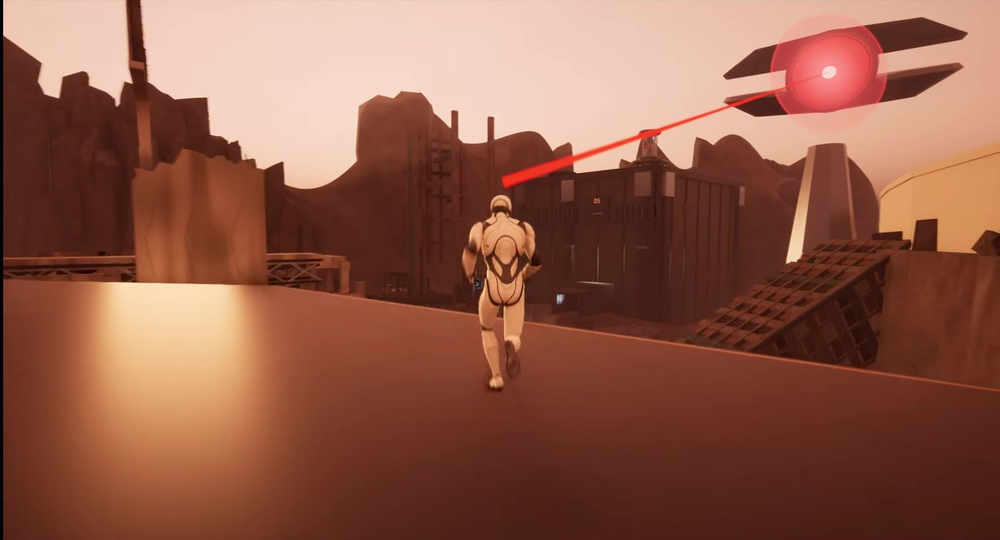

Content Designer · Level Design
정교한 분석으로 발견한 가치를
설득력 있게 전달하는 기획자, 경원철
드래곤네스트 콘텐츠 파트에서 이벤트 레벨과 1인 보스 전투를 기획해 라이브에 출시했습니다. 레벨 디자인을 중심으로, 플레이어의 동선과 긴장·휴식의 흐름을 설계합니다.
PANOPTICON: Breaking Point (가제) · 개인 UE5 레벨 · 임시 캡처
01 · LEVEL
레벨은 감정 곡선 설계입니다
긴장만 이어지면 플레이어는 지치거나 적응해서 지루해합니다. 큰 긴장은 2–3곳에 두고 그 사이를 탐색과 휴식으로 채우며, 레일 광차가 멈추는 버그도 위기 연출로 바꿔 살렸습니다.
02 · ANALYSIS
복잡한 정보를 단순 명료하게 정리합니다
구역 전체 지도에 오브젝트·기믹·진입과 이동 경로를 표시하고, 구역별 의도와 배치 방향을 문서로 남깁니다. 게임 전문 기자로 기사 700여 편을 쓰며 익힌 구조적 글쓰기가 바탕입니다.
03 · AI WORKFLOW
목표가 정해지면 가장 효율적인 방식을 찾아 실행합니다
재직 중 6주 동안 UE5 개인 레벨을 만들며 레벨 디자인·배치·대사는 직접 하고, 블루프린트·라이팅·VFX·최적화는 AI 코딩 도구에 지시하고 검수했습니다. 실무에서는 생성형 AI 콘셉트 레퍼런스로 요청할 형태와 분위기를 구체화합니다.
Featured Projects
실무 이벤트 레벨과 개인 UE5 레벨을 먼저, 보스 전투와 팀 프로젝트를 이어서 정리했습니다.

01
드래곤네스트 · 2026 이벤트 · 라이브 2026.10.07 ~ 11.05
LEVELLIVE기획 단독
- 한 달 내내 같은 코스를 반복하던 레이싱 이벤트를, 섬 전체를 누비는 비선형 수집 레벨로 재설계
- 피해야 했던 장애물(극성 팬)을 부스트를 이어 주는 자원으로 바꾼 주행 루프
- 기믹 위치는 고정, 종류와 등장은 랜덤으로 나눠 반복 플레이에 변주를 주고 불합리한 경험을 줄이도록 설계
- 지형 편집·프랍 배치부터 몬스터 액션과 AI, 객체별 트리거, 카메라·연출·보상 연결까지 기획부터 배치까지 단독 진행

02
Unreal Engine 5 · 개인 레벨 디자인 · 6주 · 7구역
LEVELUE5개인 작업재촬영 예정
- 달동네 탈출부터 옥상 결전까지 도망 → 잠입 → 탐색 → 퍼즐 → 추격으로 플레이어의 할 일을 바꾸는 7구역 구성
- 긴장을 크게 높이는 구간을 2–3곳에 두고, 그 사이를 정보 수집과 휴식으로 채운 감정 곡선 설계
- 레일 광차가 중간에 멈추는 문제를 “멈췄어?!” 위기 연출로 바꿔, 차지 펀치 2회를 기본 흐름으로 만든 수정 사례
COMBAT STRUCTURE판단은 유지하고
대응은 바뀌게HP > 50% → HP ≤ 50%일반 3연격 · 2회 돌진 → 광역 3연격 · 유도 검
03
드래곤네스트 · 1:1 보스 토벌전 · 2026.05 라이브 (1개월)
COMBATLIVE보스 기획
- 파티 역할 분담 없이 혼자 판단하고 대응하는 1:1 보스전 설계
- 체력 50%에서 돌진·일반 3연격을 광역 3연격·유도 검으로 교체하는 페이즈 구성
- 유도가 너무 강했던 유도 검 패턴을 직전 위치 바닥 명중 → 1초 후 폭발로 다시 만들고, 2중 투사체의 시그널을 1프레임 단위로 조정
LAST SANCTUARY공격 · 방어 · 회복
선택에 비용을 부여하다STAMINA × TIMING전투 구조 요약도 · 실제 게임 화면 아님
04
6인 팀 프로젝트 · 2D 액션 · 2025.06.20 ~ 08.14
COMBATLEVEL팀 프로젝트
- 캐릭터 행동과 전투 시스템, 필드 오브젝트, 캐릭터 시스템·UI, 적 공통 행동 기획
- 스태미나를 사용하는 방어·회피와 타이밍을 요구하는 퍼펙트 가드로 전투 선택 구성
- 일반 적 초기 데이터와 필드 오브젝트 데이터 테이블 작성
Other Work
라이브 이슈 해결과 역기획·창작 기획서입니다.
LIVE레벨 · 트리거
스테이지 진행 불가 버그 원인 분석과 해결안
문 닫힘 트리거와 투명 콜리전 위치가 어긋나 재진입이 막히는 문제를 스테이지별 원인으로 나누고, 파티원·유령 상태까지 고려한 보조 워프 트리거를 제안했습니다.
드래곤네스트 · 2025.12
역기획전투
젠레스 존 제로 '트리거' 역기획서
결의 자원과 여진 공격의 발동 조건을 중심으로, 교체 전투의 협공 루프와 전투 템포를 분석했습니다.
창작 기획튜토리얼
원신 캐릭터 교체 튜토리얼 창작 기획서
교체 조작부터 원소 반응·역할군·실전 활용까지 단계적으로 익히는 튜토리얼을 제안했습니다. (v5.3 기준 창작안)
데이터전투
데이터 테이블 및 전투 시뮬레이터
일반 적 초기 수치와 필드 오브젝트 데이터 테이블 작업입니다. 팀 발표자료에는 목표 처치 시간과 계산값을 비교한 사례가 함께 담겨 있습니다.
ABOUT
게임 전문 기자로 일하며 게임사와 이용자 양쪽을 취재했고, 그 과정에서 게임을 구조로 읽는 법을 익혔습니다.
지금은 드래곤네스트 콘텐츠 파트에서 이벤트 레벨과 보스 전투를 기획해 라이브에 출시하고 있습니다.
CAREER
- 드래곤네스트 콘텐츠 파트 · 콘텐츠 기획이벤트 레벨, 보스 토벌전, 패치노트, 라이브 이슈 대응 · 재직 중
- 지원커뮤니케이션즈 취재부 · 게임 전문 기자12개월
- 대일테크 무역부 · 의료장비 PM21개월
TOOLS
사내 맵툴 · 트리거 · 액션툴
Unreal Engine 5
Unity
Excel
PowerPoint
Figma
Notion
생성형 AI